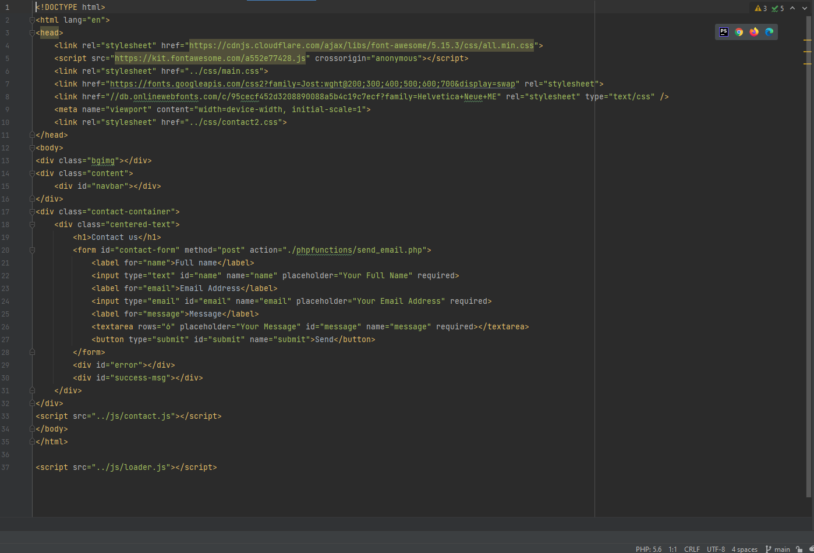
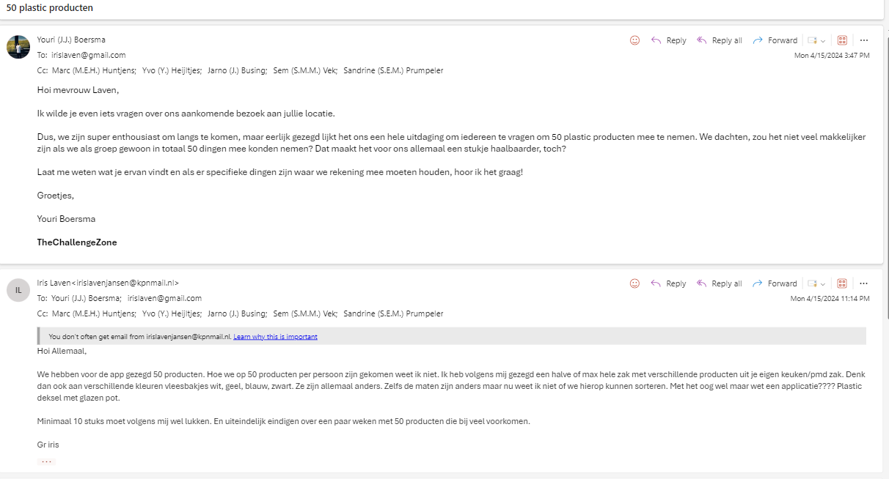
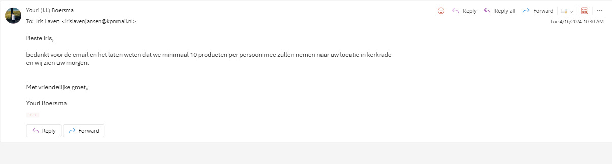
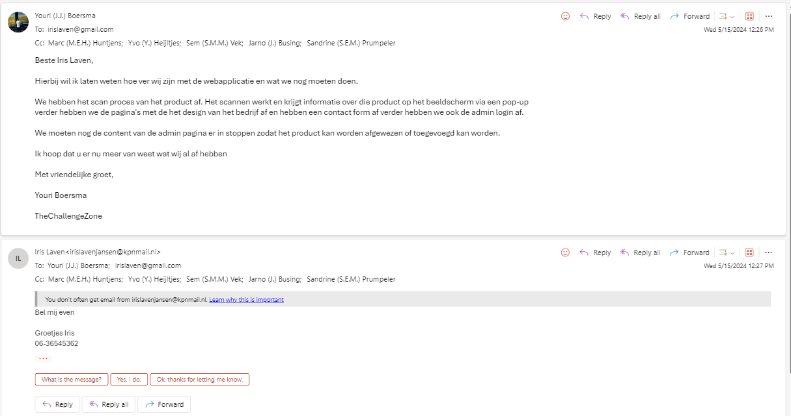

klant: aanwezig groepje webapp: iedereen aanwezig
Bespreking van de vereisten voor de ontwikkeling van de webapplicatie
Op 3-4-2024 hebben wij een uitgebreid gesprek gehad met Mevrouw Laven om de vereisten voor de ontwikkeling van een webapplicatie te bespreken. Het doel van de webapplicatie is om een gebruiksvriendelijke en intuïtieve ervaring te bieden voor kinderen vanaf 6 jaar, waarbij ze plastic producten kunnen scannen en aanvullende functionaliteiten kunnen gebruiken. Hieronder vindt u een samenvatting van de belangrijkste punten die tijdens het gesprek zijn besproken.
• De webapplicatie moet in staat zijn om minimaal 50 verschillende plastic producten te scannen. • Gebruikers moeten ook in staat zijn om zelf producten toe te voegen met behulp van foto's. • Het ontwerp moet eenvoudig en intuïtief zijn, specifiek gericht op kinderen vanaf 6 jaar. • Een keuzelijst met waar de verpakking uit bestaat (dop/deksel – fles/bakje – folie/bedrukking) en dit aan de materiaal soorten koppelen
De webapplicatie moet zo gebruiksvriendelijk mogelijk zijn, zelfs voor jonge kinderen of gebruikers met beperkte leesvaardigheid. Belangrijk is dat de interface begrijpelijk is, zelfs zonder uitgebreide leesvaardigheid, zodat kinderen zelfstandig kunnen navigeren en producten kunnen scannen.
Na het scannen van een plastic product moet de webapplicatie een visuele weergave bieden waarbij de dop en het plastic product wordt gescheiden om te laten zien in wat het verschil is. Het kleurenpalet van de applicatie moet zorgvuldig worden gekozen om aan te sluiten bij de belevingswereld van de doelgroep.
Rijksweg Zuid 1B, 6161 BE Geleen
17-4-2024 op locatie bij mevrouw Laven daarbij moeten we ook 50 plastic producten per persoon meenemen. Locatie: Langheckweg 10, 6468 EL Kerkrade 24-4-2024 pitch houden voor project te maken locatie: brightlands chemelot terrein
Dit gesprek heeft een solide basis gelegd voor de verdere ontwikkeling van de webapplicatie. We zijn vastberaden om de vereisten van mevrouw Laven nauwgezet te volgen en een product te leveren dat voldoet aan de verwachtingen van de gebruikers.
Youri Boersma Project leider
• Een webapplicatie waarmee gebruikers eenvoudig hun plastic afval gescheiden kunnen aanbieden op basis van het type plastic. • Waarin gebruikers de mogelijkheid hebben om 50 unieke plastic producten te scheiden. Waarvan ieder artikel apart gescheiden kan worden op basis van minimaal drie verschillende types polymeer. • Het systeem moet kunnen meegroeien om de mogelijkheid te hebben om meer verschillende soorten plastic producten te kunnen verwerken in de toekomst. • Het systeem moet een mobielvriendelijke versie hebben, zodat het gebruikt kan worden op smartphones en tablets. • De webapplicatie moet voor 31 mei 2024 klaar zijn en aan TheChallengeZone en de klant worden gegeven.
• Het systeem moet gebruiksvriendelijk zijn en eenvoudig te begrijpen voor gebruikers en kinderen vanaf zes jaar. • Het systeem moet voldoen aan de geldende privacywetten en -voorschriften om de persoonlijke gegevens van gebruikers te beschermen. • Het systeem moet worden ontwikkeld met schaalbaarheid in gedachten, zodat het gemakkelijk kan worden uitgebreid.
• De webapplicatie zou informatie kunnen bevatten over waarom het scheiden van plastic afval belangrijk is, om gebruikers bewust te maken van de milieuvoordelen. • De webapplicatie zou kunnen worden gekoppeld aan sociale media, zodat gebruikers hun prestaties kunnen delen en anderen kunnen aanmoedigen om ook mee te doen. • Het systeem zou informatie kunnen tonen over hoeveel plastic afval er in de gemeente is gescheiden en hoe dit heeft bijgedragen aan het verminderen van de milieu-impact, zodat gebruikers de resultaten van hun inspanningen van hun eigen gemeenschap kunnen zien.
• Het systeem zal geen betalingsfunctie bevatten voor het inleveren van gescheiden plastic afval, aangezien dit buiten de scope van het project valt. • Het systeem zal geen verplichting hebben voor gebruikers om deel te nemen aan het scheidingssysteem, aangezien het vrijwillig moet zijn om deel te nemen.
2-4 t/m 5-4 Start kick off 8-4 t/m 12-4 WWHW, FO, Moscow 15-4 t/m 19-4 TO PVE 22-4 t/m 26-4 Inleveren pitch, pitch doen 29-4 t/m 3-5 vakantie 6-5 t/m 10-5 vakantie 13-5 t/m 17-5 Front-end 20-5 t/m 24-5 Back-end 27-5 t/m 31-5 Testen en fixen 3-6 t/m 7-6 presenteren product
tekst
ik heb tijdens dit project redelijk veel gecodeerd zoals de form pagina en de over ons pagina in de form pagina heb ik bijvoorbeeld een if statement om de persoon te laten weten of het bericht is gestuurd of niet is gestuurd. daarbij wordt met een form een kleine enqueste gemaakt die vraag naar je naam eemail en het bericht zodat je iets kan achterlaten als er iets is met de website verder zitten er ook links in voor de styling en voor pictogrammen en java script
het testen van software werd gedaan tussen door het programmeren dus als ik iets getypt had dan deed ik even kijken of het werkte of dat er wat aangepast moest worden het is ook makkelijker om het zo te doen want je kan bij elke veranderen meteen gaan testen.
wij hebben in het begin van het project gevraagd wat de klant wou hebben sommige dingen die wij wel konde maken maar veel te veel werk was dus aangegeven dat het te veel werk was en dat we een andere manier moesten gebruiken
ik heb tijdens dit project veel overleg gehad over wat wij wouden veranderen en met de klant over wat ze graag ander wou hebben
 bij deze email was het zo dat wij de opdracht hadden gekregen dat wij 50 plastic producten mee moesten nemen naar de klant om te laten zien dat wat voor een soort plastic sommigen producten zijn. dit vond onze groep te veel om mee te nemen en daarom heb ik naar de klant een mail gestuurd over of de product aantal wat naar beneden zou kunnen worden gehaald en hebben toen ook afgesproken om 10 producten per persoon mee te laten nemen in plaats van 50 dus ik heb met de klant overlegd of het product aantal naar onder gehaald zou kunnen worden.
bij deze email hebben wij laten weten wat wij gedaan hebben met dit project en wat er nog af gemaakt moest worden zodat de klant weet dat wij op schema waren verder heb ik toen nog even met de klant gebeld over wat wij al gedaan hadden in dit project
het project hebben wij gespresenteer bij het brightlands bij het chemelot terein daar hebben we met de klant en een collega van de klant daar hebben wij het gehad over wat wij voor een opdracht hadden gekregen wen welke stappen we gemaakt hadden bij dit project
na de presentatie hebben nog gepraat en feedback gekregen van de klant over hoe het project is gegaan en hoe het eind product er uit zou zien